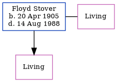

Floyd M Stover 1905 - 1988
[ Home ] | [ Calendar ] | [ Surnames Index ] | [ Family History ]Floyd Stover, the husband of Blanche Marie Peters (the fifth cousin on the father's side of Nigel Horne), was born in Bottineau, North Dakota, USA on Apr 20, 19051,2,3 and. He married Blanche (with whom he had 1 surviving child) in Havre, Hill, Montana, USA on Feb 8, 19504.
He died on Aug 14, 1988 in Toole, Montana, USA1,2.
Citations
- Social Security Death Index - Findmypast
- United States Billion Graves index - Findmypast
- United States Marriages - Findmypast
- United States Marriages - Findmypast
Media
United States Billion Graves index - US/BMD/BILLION/021540207
Social Security Death Index - USBMD/SSDI/517106875
United States Marriages - R_1454612466/1
United States Marriages - US/FS/M/011274049/1
Family Tree
Generated by ged2site. Last updated on Nov 13, 2024